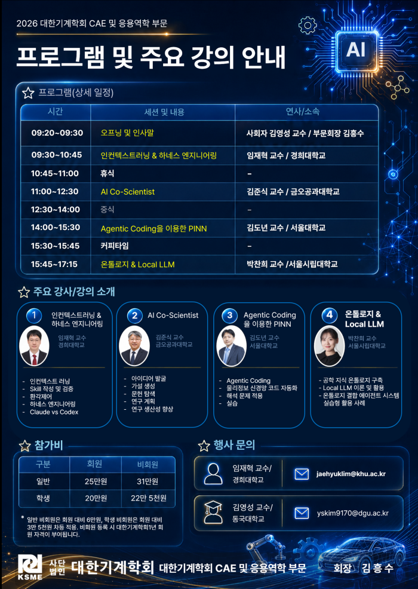

2026년 7월 28일IDEA 교육: 기계공학도를 위한 Agentic AI 실전강습회 참가
사단법인 대한기계학회 CAE 및 응용역학 부문이 주최한 「기계공학도를 위한 Agentic AI 실전강습회」에 참가했습니다. 인컨텍스트러닝 & 하네스 엔지니어링, AI Co-Scientist, Agentic Coding을 이용한 PINN, 온톨로지 & Local LLM까지 네 가지 주제의 강의를 통해 Agentic AI를 공학 연구와 설계에 접목하는 실전 방법을 학습했습니다.
- 주최
- 사단법인 대한기계학회 CAE 및 응용역학 부문
- 일시
- 2026년 7월 28일
- 장소
- 동국대학교 신공학관
- 주요 강의
-
인컨텍스트러닝 & 하네스 엔지니어링 (임재혁 교수, 경희대학교)
AI Co-Scientist (김준식 교수, 금오공과대학교)
Agentic Coding을 이용한 PINN (김도년 교수, 서울대학교)
온톨로지 & Local LLM (박찬희 교수, 서울시립대학교)
참가자 후기
하형진 — AI는 뛰어난 생산성을 제공하지만 Hallucination 문제가 있어 결과를 그대로 신뢰하기보다 반드시 검증해야 함을 배웠습니다. 또한 공학 지식을 AI와 결합하는 중요성을 느꼈으며, 현재 진행 중인 연구에도 Agentic AI를 적극 활용해 연구 생산성과 문제 해결 능력을 높이고 싶다는 목표를 가지게 되었습니다.
정승한 — LLM이 RNN의 발전 과정과 연결된다는 사실이 놀라웠습니다. RNN을 공부하며 단어의 위치와 순서가 문장 의미에 영향을 준다는 점을 배웠고, 인공지능 분야의 연관성도 느꼈습니다. 특히 Transformer와 Attention이 인상 깊어 앞으로 더 공부하고 싶습니다.
최민혁 — PINN 예제 기반 하네스, 루프 엔지니어링 실습을 통해 Agentic AI 구현 방식을 파악할 수 있었습니다. 아울러 공유받은 AI 활용 연구 경험 및 온톨로지 등 시스템 기법은 향후 연구 방향 설정 및 연구 생산성 극대화에 도움이 될 것이라 기대합니다.
최준석 — 이번 강습회를 통해 Multi-Modal LLM, AI Agent, PINN과 온톨로지의 개념과 활용법을 배웠습니다. 특히 사출성형 매뉴얼과 제조 데이터로 지식 그래프를 구축해 공정 질문에 답하고, 없는 지식은 말하지 않도록 한 사례가 인상 깊었습니다.